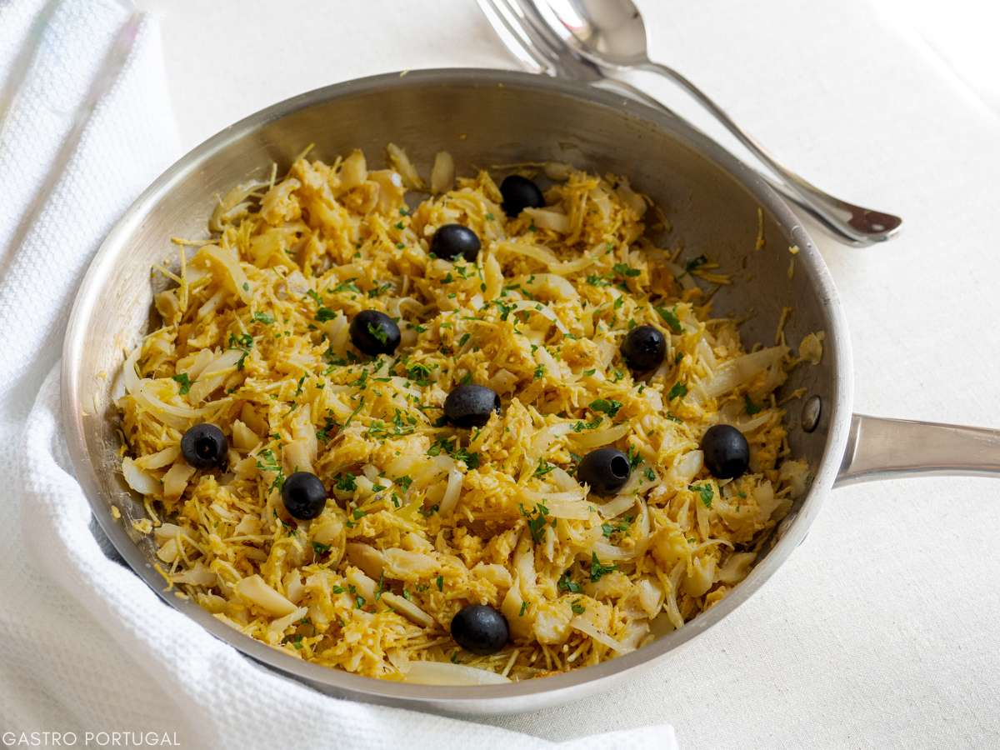

Home
Bacalhau à Brás

Ingredients
- 500g (1 lb) of shredded and desalted codfish
- 2 medium onions, thinly sliced
- 200ml (1 cup) of heavy cream
- 500g (1 lb) of potatoes, cut into thin matchsticks
- 2 eggs
- Olive oil
- Salt and pepper to taste
- Black olives and chopped parsley for garnish
Steps
- Preheat the oven to 180°C (350°F).
- Heat a generous amount of olive oil in a large skillet over medium heat.
- Add the sliced onions and cook until they are soft and translucent.
- Add the shredded codfish and cook for a few minutes until it is heated through.
- Add the matchstick potatoes and cook until they are golden brown and crispy.
- In a separate bowl, whisk together the eggs and heavy cream.
- Finish with the Eggs
- Egg and cream mixture over the codfish and potatoes in the skillet.
- Stir gently to combine and cook until the eggs are just set.
- Transfer the skillet to the oven and bake for 10-15 minutes, or until the top is golden brown and crispy.
- Remove from the oven and let it cool slightly before serving.
- Garnish with black olives and chopped parsley before serving.